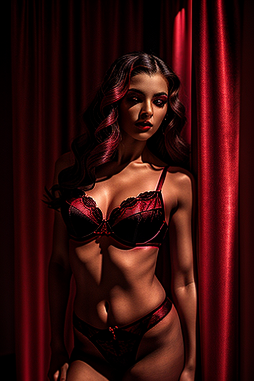
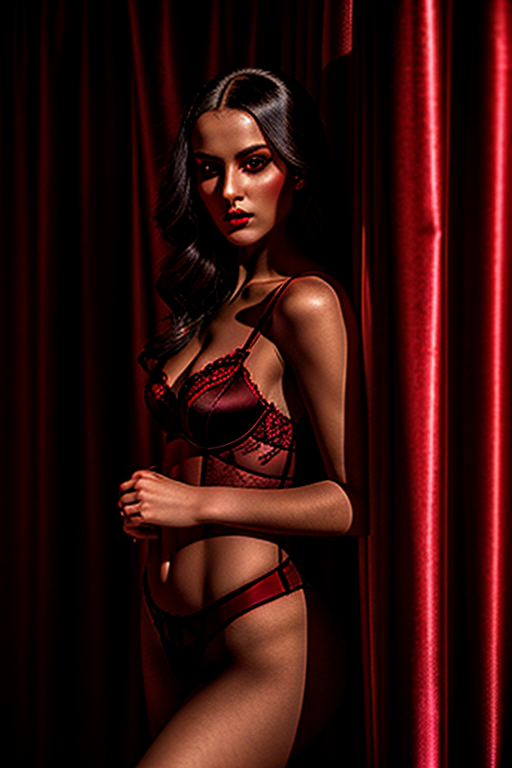
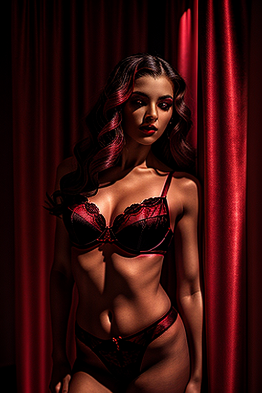
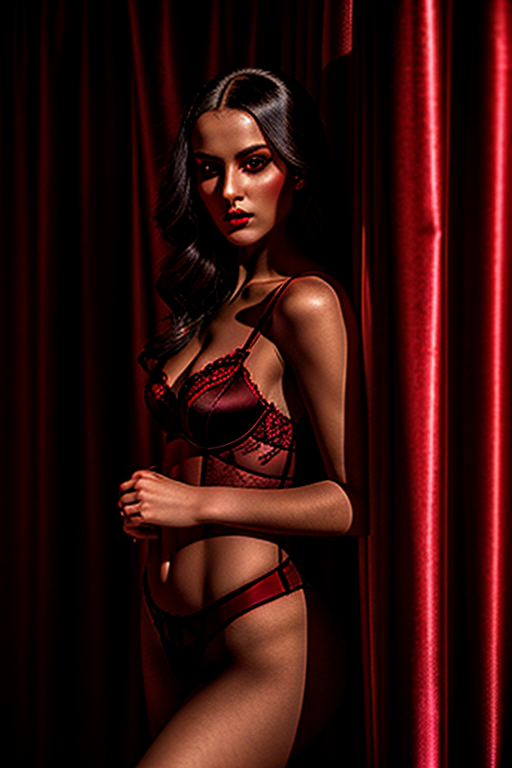
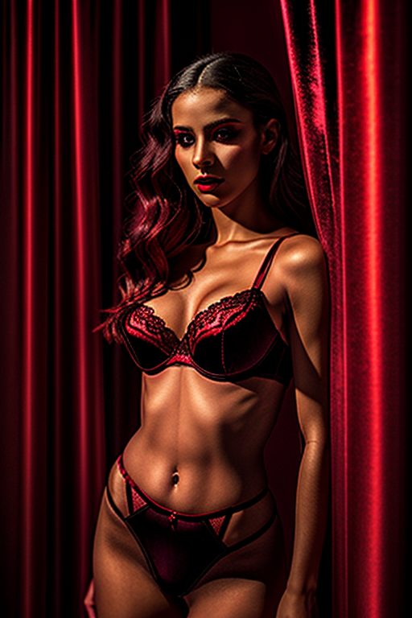
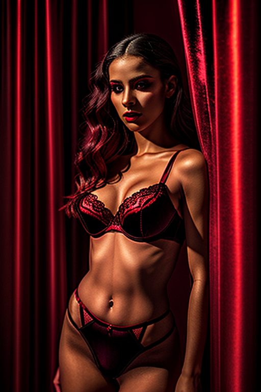
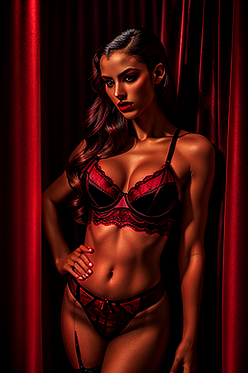
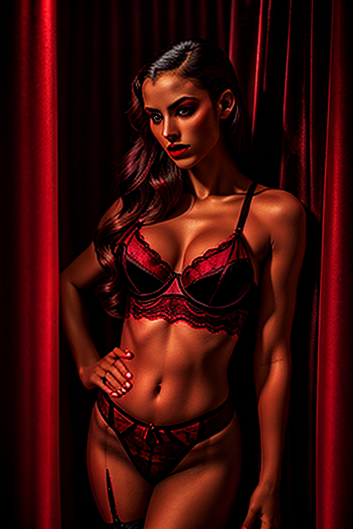

This set explores girl on red carpet photo through cinematic aesthetics and moody tone under window light. Compositions use close-up with nature scene, keeping focus clear and tidy. Details like streetwear styling and balanced colors make browsing easy.
Browse redroom images. Page 4 of curated redroom-style portrait collection.
 





 



 

Here we highlight page4, aiming for clean structure, quick scanning, and useful context. Alt text and headings are optimized to make the content accessible and to provide consistent cues across the site. Subtle differences in wording help avoid duplication across similar pages. Bookmark the page if it’s useful; updates aim to improve clarity, speed, and overall structure over time. Alt text and headings are optimized to make the content accessible and to provide consistent cues across the site. Subtle differences in wording help avoid duplication across similar pages. Internal navigation leads to related items with comparable tone or composition. This reduces bounce and supports exploration within the same theme. Bookmark the page if it’s useful; updates aim to improve clarity, speed, and overall structure over time.